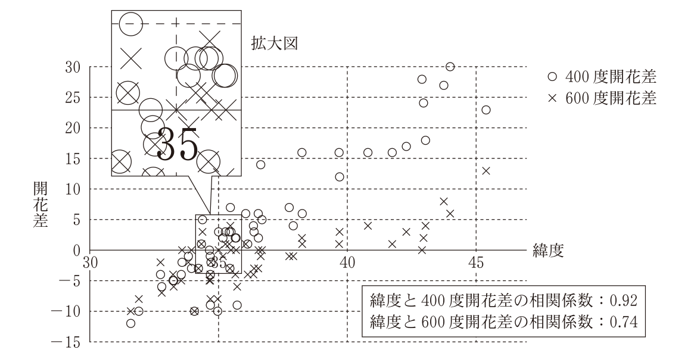
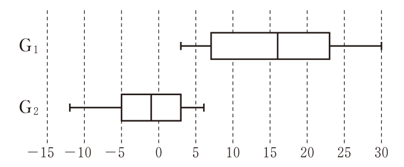
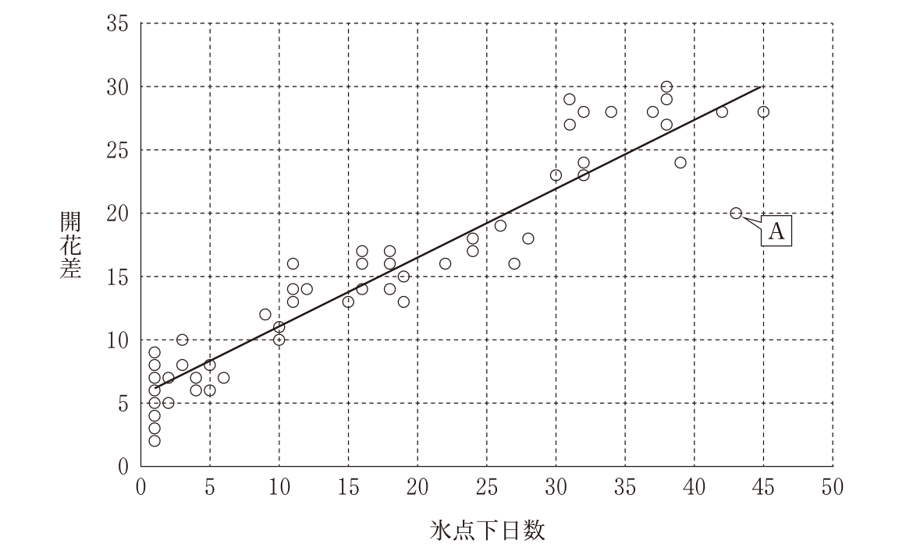

第4問 次の文章を読み，後の問い（問1～4）に答えよ。（配点25）
桜の花が好きなT さんは桜の開花日に興味をもち，気象庁のデータを用いて，桜の開花日を分析することにした。
問1 次の文章を読み，後の問い（a・b）に答えよ。
T さんは気象庁のデータから，桜の開花日を観測している場所（観測点）ごとに，2014年から2023年までの開花日を表1にまとめた。例えば，稚内の2023年の開花日は5月3日である。なお，この気象庁のデータはオープンデータである。
| 観測点 | 2014年 | 2015年 | … | 2021年 | 2022年 | 2023年 |
|---|---|---|---|---|---|---|
| 稚内 | 5月11日 | 5月3日 | … | 5月8日 | 5月6日 | 5月3日 |
| 旭川 | 5月2日 | 4月27日 | … | 4月29日 | 4月26日 | 4月25日 |
| 網走 | 5月7日 | 4月30日 | … | 5月6日 | 4月27日 | 4月28日 |
| … | … | … | … | … | … | … |
| 那覇 | 1月15日 | 1月15日 | … | 1月4日 | 1月11日 | 1月7日 |
| 南大東島 | 1月7日 | 1月15日 | … | 0 | 1月28日 | 2月7日 |
a 次の二つの文A，Bは，オープンデータについての説明である。その正誤の組合せとして最も適当なものを，後の⓪～③のうちから一つ選べ。 ア
Aオープンデータは，誰でも入手可能である。
Bオープンデータを加工・編集する場合には，利用申請が必須である。
b 次の文章中の空欄 イ ・ ウ に入れるのに最も適当なものを，後の解答群のうちから一つずつ選べ。
T さんは，表1において，2021年の南大東島の開花日に0が入力されていることを見つけ，南大東島はその年に開花日の記録がない観測点であることがわかった。つまり，表1の0は イ を意味するので，T さんは表1から イ が含まれる行を除外したデータを用いることにした。
T さんはまず，4月1日より早く開花した観測点の数が，年ごとにどのように変化しているかを見るために， ウ とした折れ線グラフにより可視化し，変化の傾向を把握した。
問2 次の文章を読み，空欄 エ ～ カ に入れるのに最も適当なものを，後の解答群のうちから一つずつ選べ。
T さんは，各年の開花日に関する経験則として，次の二つの仮説があることを見つけた。なお，気温の単位はセ氏（℃）である。
そこでT さんは，ある年で2月1日以降に開花した観測点を対象に，この二つの仮説を検証することにした。まず，この年の2月1日以降の平均気温と最高気温のデータを入手した。さらに，各観測点で2月1日からの平均気温の和が初めて400を超えた日を400度開花推定日，2月1日からの最高気温の和が初めて600を超えた日を600度開花推定日とし，同じ年の開花日（実際の開花日）と合わせて，表2にまとめた。
次に，T さんは各観測点で開花推定日が実際の開花日からずれている日数を確認した。実際の開花日を基準にして，開花推定日が早ければ負の値，遅ければ正の値，一致していれば0として，400度開花推定日と実際の開花日との差（400度開花差），ならびに600度開花推定日と実際の開花日との差（600度開花差）を計算し，表3にまとめた。
例えば，名古屋の400度開花差は エ ，600度開花差は オ と計算できた。また，新潟と奈良のそれぞれで，どちらの開花推定日が実際の開花日に近いか，表3だけを用いて比較すると， カ ことがわかった。なお，開花差の絶対値が小さいことを「実際の開花日に近い」とする。
| 観測点 | 400度開花推定日 | 600度開花推定日 | 実際の開花日 |
|---|---|---|---|
| 稚内 | 5月31日 | 5月21日 | 5月8日 |
| 旭川 | 5月26日 | 5月7日 | 4月29日 |
| … | … | … | … |
| 新潟 | ？ | ？ | ？ |
| … | … | … | … |
| 名古屋 | 3月19日 | 3月16日 | 3月17日 |
| 甲府 | 3月20日 | 3月14日 | 3月18日 |
| … | … | … | … |
| 奈良 | ？ | ？ | ？ |
| 観測点 | 400度開花差 | 600度開花差 |
|---|---|---|
| 稚内 | 23 | 13 |
| 旭川 | 27 | 8 |
| … | … | … |
| 新潟 | 4 | −1 |
| … | … | … |
| 名古屋 | エ | オ |
| 甲府 | 2 | −4 |
| … | … | … |
| 奈良 | −1 | −5 |
（表の一部を“？”で隠してある）
問3 次の文章を読み，後の問い（a・b）に答えよ。
T さんは観測点の緯度も開花差に影響するのではないかと考えた。そこで，ある年のデータを用いて，横軸に緯度，縦軸に開花差をとった散布図（図1）を作成し，相関係数を求めた。なお，各観測点の緯度はすべて異なっている。

（注）観測点の緯度は，観測点の都庁舎・市庁舎がある場所の緯度を用いた。
a 図1と相関係数から読み取れることとして正しいものを，次の⓪～④のうちから二つ選べ。ただし，解答の順序は問わない。 キ ・ ク
b 次の文章を読み，空欄 ケ ～ サ に入れるのに最も適当なものを，後の解答群のうちから一つずつ選べ。
T さんは，緯度が高い観測点で2月1日以降に平均気温が氷点下（0℃以下）となる日があることを見つけ，開花差に影響するのではないかと考えた。
図1の作成に用いたデータから，2月1日以降に平均気温が氷点下であった日が存在する観測点（氷点下観測点）のみを集めたグループ（G1）とそれ以外の観測点を集めたグループ（G2）に分け，400度開花差に関する箱ひげ図（図2）を作成した。なお，どちらの箱ひげ図にも外れ値はなかった。

図2から，開花差の絶対値が ケ 以上となる観測点は，G1では半数以上あるが，G2では1か所もないことから，グループ間の違いを確認した。また，400度開花推定日と実際の開花日が一致している観測点（一致観測点）について， コ 一致観測点の数がわかり， サ G2に存在することがわかった。
問4 次の文章を読み，空欄 シ ・ ス に入れるのに最も適当なものを，後の解答群のうちから一つずつ選べ。
T さんは，氷点下観測点の開花推定日を補正できないかと考えた。
1年間のデータだけでは足りないと感じたT さんは，ある3年間の気象データを用いて，まず，各年の気象データから氷点下観測点を抽出し，2月1日以降に平均気温が氷点下であった日数（氷点下日数）を数えた。次に，抽出された3年分の氷点下観測点について，氷点下日数と400度開花差の散布図と回帰直線（図3）を作成した。なお，回帰直線の方程式は，次のとおりである。
（開花差の予測値）＝0．55×（氷点下日数）＋5．48

T さんは，開花差の予測値の小数第1位を四捨五入した値（補正日数）を用いた次の補正方法により，実際の開花日に近い補正日（400度補正日）が得られるのではないかと考えた。ただし，補正日数が負の値の場合は，補正しないことにした。
400度開花推定日よりも400度補正日の方が実際の開花日に近くなることを「うまく補正できる」とする。T さんは図3から， シ ことがわかった。
さらに，T さんは新たに別の年のデータを取得し，この補正方法を試した。観測点X において，400度開花推定日が4月23日，氷点下日数は18日であった。これより，観測点X の400度補正日は ス と計算できた。実際の開花日が4月12日だったことから，この年の観測点X ではうまく補正できた。